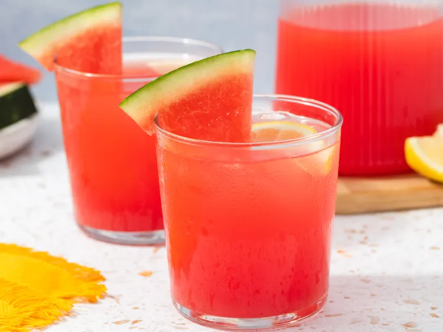

Watermelon Lemonade Recipe
A guide on how to make a homemade Watermelon Lemonade
Ingredients
- 4 cups cubed watermelon
- ½ cup white sugar
- ½ cup water
- cups cold water
- ½ cup fresh lemon juice
- 6 cups ice cubes
Steps
-
Place watermelon into a blender; cover and puree until smooth. Strain through a fine mesh sieve.
-
Bring sugar and 1/2 cup water to a boil in a saucepan over medium-high heat until sugar dissolves,
about 5 minutes. Remove from heat; stir in 3 cups of cold water and lemon juice.
-
Divide ice into 12 glasses; scoop 2 to 3 tablespoons of watermelon puree over ice, then top with lemonade.
-
Gently stir before serving.